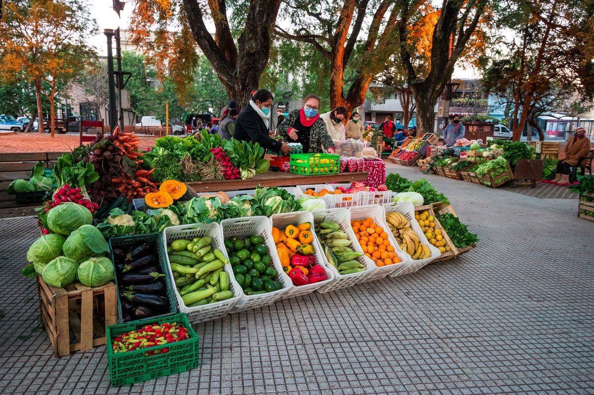

Obesidad
Obesidad: la OMS lanzó un llamado mundial para bajarla un 5% hacia 2030 y la Argentina revisó su plan con la OPS
Más de 1000 millones de personas viven con obesidad en el mundo, una de cada siete. En las Américas, el 68% de los adultos tiene sobrepeso u obesidad. Qué proponen los organismos sanitarios y qué se puede hacer en casa, en la escuela y en el barrio.

La Organización Mundial de la Salud (OMS) y UNICEF lanzaron el 17 de noviembre de 2026 un llamamiento mundial a la acción contra la obesidad bajo el lema «Bending the curve by 2030» («Aplanar la curva para 2030»). España y otros 20 países se comprometieron a acelerar la prevención, la intervención temprana y la atención, y a reducir la prevalencia nacional de obesidad en un 5% hacia 2030.
Un día después, el 18 de noviembre, la Organización Panamericana de la Salud (OPS) reunió en Washington a representantes de los ministerios de Salud de los nueve países pioneros de la región en el Plan de Aceleración para Detener la Obesidad. Entre ellos está la Argentina, junto con Barbados, Brasil, Chile, México, Panamá, Perú, Trinidad y Tobago y Uruguay. Según la OPS, fue la primera vez que los nueve se reunieron juntos.
Una de cada siete personas
Los números que difundió la OMS explican la urgencia. Más de 1000 millones de personas en el mundo viven con obesidad: una de cada siete. Desde 1990, la prevalencia se más que duplicó en adultos y se cuadruplicó en adolescentes. Y en 2025, por primera vez, la obesidad superó a la insuficiencia ponderal (el bajo peso) como la forma más común de malnutrición en niños y adolescentes de 5 a 19 años.
La OMS define la obesidad como una forma de malnutrición y una enfermedad crónica y compleja que aumenta el riesgo de enfermedades cardiovasculares, diabetes y algunos tipos de cáncer.
«La obesidad es uno de los principales retos de salud pública de nuestro tiempo, pero su prevalencia no tiene por qué seguir aumentando», afirmó el director general de la OMS, Tedros Adhanom Ghebreyesus.
Las Américas, entre las regiones más afectadas
En la reunión de Washington, el director de la OPS, Jarbas Barbosa, advirtió que la región enfrenta «una de las cargas de sobrepeso y obesidad más altas del mundo». En 2022, el 68% de los adultos y el 38% de los niños y adolescentes de 5 a 19 años tenían sobrepeso u obesidad. Si la tendencia sigue, la prevalencia en adultos podría llegar al 73% en 2030.
El tema se conecta con otro dato reciente de la OPS: el 12 de noviembre, el organismo informó que 112 millones de adultos viven con diabetes en las Américas y que el 35,6% de los adultos de la región no hacía actividad física suficiente.
Qué medidas recomienda la OMS
El llamamiento aclara que no hay una solución única y plantea tres frentes que deben aplicarse juntos: prevenir el sobrepeso y la obesidad en toda la población; identificar y acompañar antes a quienes tienen mayor riesgo; y garantizar tratamiento y atención oportunos, eficaces y asequibles.
Entre las medidas de eficacia probada que la OMS alienta a adoptar figuran:
- Apoyo a la lactancia materna y a una alimentación complementaria adecuada en los primeros años.
- Entornos escolares saludables.
- Impuestos a las bebidas azucaradas.
- Etiquetado nutricional en el frente de los envases.
- Restricciones a la publicidad de alimentos poco saludables dirigida a chicos.
- Políticas que faciliten la actividad física.
- Más prevención y atención de la obesidad en el primer nivel, incluido el tratamiento farmacológico cuando corresponda.
Otro punto que destaca la OMS es que las personas que viven con obesidad deben participar en el diseño de las políticas y los servicios, no solo recibirlos. El organismo también señaló que los datos preliminares de algunos países sugieren que la prevalencia podría empezar a bajar.
Qué se puede hacer en la vida cotidiana
Las recomendaciones de la OMS apuntan sobre todo a los gobiernos, pero varias se pueden trasladar a la casa:
- Leer el frente del envase. El etiquetado frontal es una de las herramientas que promueve la OMS para comparar productos antes de comprarlos.
- Revisar las bebidas. Que la OMS proponga gravar las bebidas azucaradas muestra el peso que tienen en la alimentación. El agua es la alternativa más simple.
- Priorizar alimentos frescos. Ferias, verdulerías y mercados de barrio acercan frutas y verduras de estación.
- Moverse todos los días. La OMS informó este mes que uno de cada cuatro adolescentes en el mundo no llegó a 60 minutos de actividad física moderada o intensa ningún día de la semana previa. Caminar o ir en bici a la escuela o al trabajo suma.
- Consultar a tiempo. La intervención temprana es uno de los tres frentes del llamamiento. Un control en el centro de salud ayuda a detectar riesgos antes de que se conviertan en enfermedad.
El desafío es colectivo
Para la OMS, el problema no se resuelve solo con fuerza de voluntad individual: hacen falta entornos que vuelvan la opción saludable la más fácil. Lo dijo la ministra de Sanidad de España, Mónica García Gómez: «Nuestro éxito se medirá por nuestra capacidad de lograr que las políticas lleguen a los colegios, a los barrios y, sobre todo, a las familias que más dificultades tienen para acceder a entornos saludables».
En la región, la OPS trabaja con los países pioneros, entre ellos la Argentina, con la meta de reducir la obesidad cinco puntos porcentuales hacia 2030.
Fuente
Organización Mundial de la Salud (OMS), comunicado de prensa “Los líderes se comprometen a acelerar las medidas para la prevención y el control de la obesidad”, 17 de noviembre de 2026 · Organización Panamericana de la Salud (OPS), nota sobre la reunión de los países pioneros del Plan de Aceleración para Detener la Obesidad en las Américas, Washington, 18 de noviembre de 2026 · OPS, “Diabetes in the Americas: 112 million adults live with the disease as gaps in diagnosis and treatment persist”, 12 de noviembre de 2026 · OMS/OPS, nuevas estimaciones sobre actividad física en adolescentes publicadas en The Lancet Global Health, noviembre de 2026